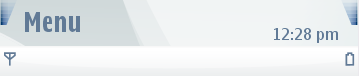
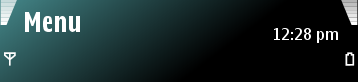

Areas
The phone's screen is divided into three areas. Carbide.ui allows
you to edit these areas:
Status Area
The Status area, which is the upper part of the mobile phone's screen,
consists of three sub-areas: Status Area Background, Navi Pane
Background, and Idle Status Area Background.
Main Area
The Main area, which is the large middle part of the mobile phone's
screen, consists of five different sub-areas. These sub-areas include,
for example, active and idle main area backgrounds.
Control Area
The Control area, which is the bottom part of the mobile phone's
screen, consists of two sub-areas, the Control Area Background and the
Idle Control Area Background.


Figure:
Default and customize
status areas
Note:
Some areas can be
animated.
Note:
Most of the areas contain
a background layer by default, allowing you to define transparency for
the components. The Navi Pane component does not contain a background
layer as a default. To add a background layer to Navi Pane, select the
component and go to Layers view or the Animation Editor. Right-click
the layer and select Add Background. Now you can add effects to the
background layer.